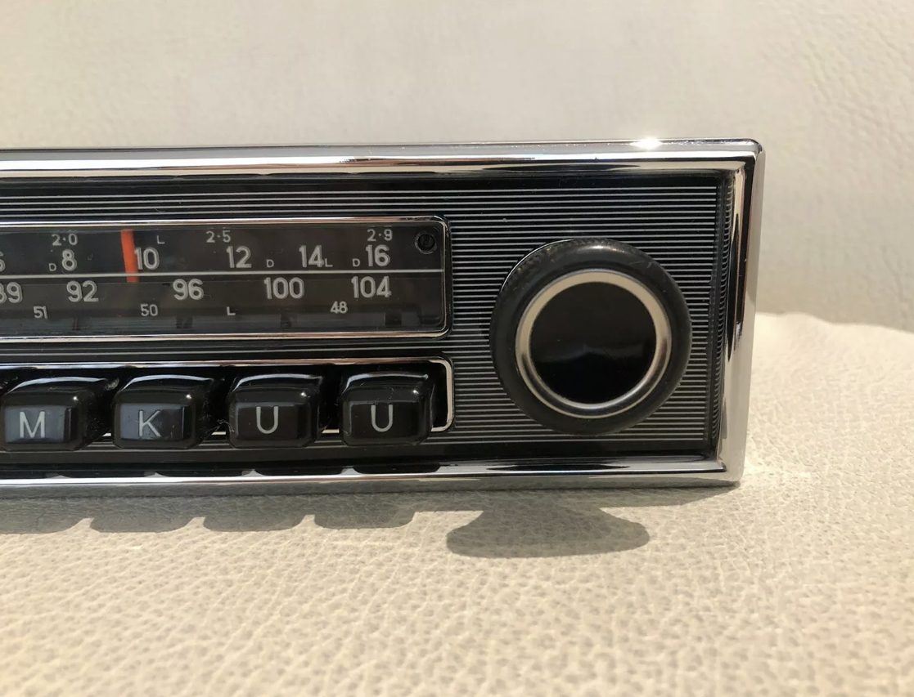

Ihr Altgerät verdient den Originalklang zurück.
Statt ein neues Radio zu kaufen, bringen wir Ihr vorhandenes Autoradio wieder in den Originalzustand — technisch geprüft und optisch aufgearbeitet.
Ablauf
So läuft Ihre Restauration ab
01
Anfrage & Zustandsaufnahme
Sie schicken uns Ihr Gerät oder beschreiben den Zustand über das Kontaktformular — wir geben Ihnen eine erste Einschätzung.
02
Zerlegen & Prüfen
Das Radio wird vollständig zerlegt, jede Baugruppe einzeln auf Funktion und Zustand geprüft.
03
Reinigung & Aufarbeitung
Chrom, Blenden und Bedienelemente werden gereinigt und aufgearbeitet, defekte Teile ersetzt.
04
Elektronik-Check & Einmessen
Die Elektronik wird instand gesetzt und das Gerät auf den korrekten Empfang eingemessen.
05
Rückversand
Ihr restauriertes Original geht sicher verpackt und versichert zurück an Sie.
Ergebnisse
Vorher-Zustand, nachher Originalklang
